Matplotlib Exercises
#1. plotting using matplotlib
from matplotlib import pyplot as plt
x = [5,2,7]
y = [2,16,4]
plt.plot(x,y)
plt.title('Info')
plt.ylabel('Y axis')
plt.xlabel('X axis')
plt.show()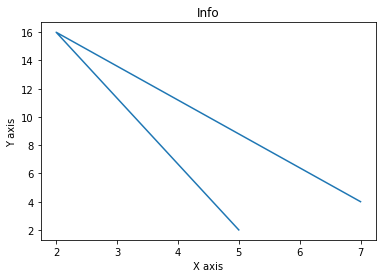
# 2. Styling using matplotlib
from matplotlib import style
style.use('ggplot')
x = [5,8,10]
y = [12,16,6]
x2 = [6,9,11]
y2 = [6,15,7]
plt.plot(x,y,'g',label='line one', linewidth=5)
plt.plot(x2,y2,'c',label='line two',linewidth=5)
plt.title('Epic Info')
plt.ylabel('Y axis')
plt.xlabel('X axis')
plt.legend()
plt.grid(True,color='k')
plt.show()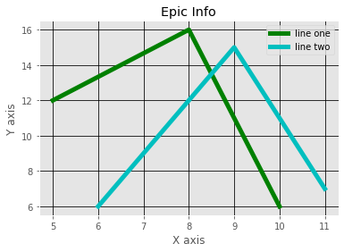
# 3. plot using green dots
plt.plot([1,2,3,4,5], [1,2,3,4,10], 'go')
plt.show() 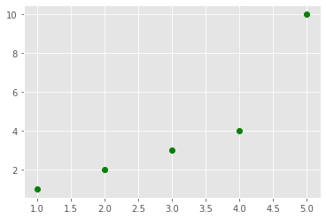
# 4. Draw two sets of points
plt.plot([1,2,3,4,5], [1,2,3,4,10], 'go') # green dots
plt.plot([1,2,3,4,5], [2,3,4,5,11], 'b*') # blue stars
plt.show() 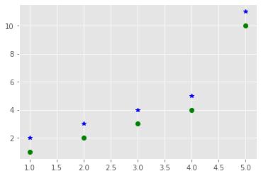
# 5. Bar plot
from matplotlib import pyplot as plt
plt.bar([0.25,1.25,2.25,3.25,4.25],[50,40,70,80,20],
label="x",width=.5)
plt.bar([.75,1.75,2.75,3.75,4.75],[80,20,20,50,60],
label="y", color='r',width=.5)
plt.legend()
plt.xlabel('x')
plt.ylabel('y')
plt.title('Information')
plt.show()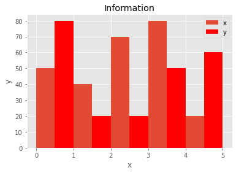
# 6. Pie-chart
days = [1,2,3,4,5]
sleeping =[7,8,6,11,7]
eating = [2,3,4,3,2]
working =[7,8,7,2,2]
playing = [8,5,7,8,13]
slices = [7,2,2,13]
activities = ['sleeping','eating','working','playing']
cols = ['c','m','r','b']
plt.pie(slices,
labels=activities,
colors=cols,
startangle=90,
shadow= True,
explode=(0,0.1,0,0),
autopct='%1.1f%%')
plt.title('Pie Plot')
plt.show()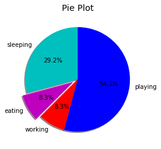
# 7. line chart
import matplotlib.pyplot as plt
y = [1, 4, 9, 16, 25,36,49, 64]
x1 = [1, 16, 30, 42,55, 68, 77,88]
x2 = [1,6,12,18,28, 40, 52, 65]
fig = plt.figure()
ax = fig.add_axes([0,0,1,1])
l1 = ax.plot(x1,y,'ys-') # solid line with yellow colour and square marker
l2 = ax.plot(x2,y,'go--') # dash line with green colour and circle marker
ax.legend(labels = ('tv', 'Smartphone'), loc = 'lower right') # legend placed at lower right
ax.set_title("Advertisement effect on sales")
ax.set_xlabel('medium')
ax.set_ylabel('sales')
plt.show()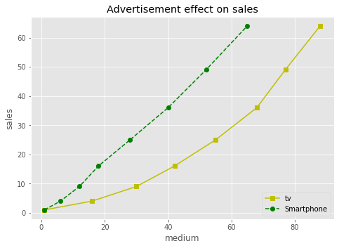
# 8. StackPlot
import numpy as np
rng = np.arange(50)
rnd = np.random.randint(0, 10, size=(3, rng.size))
yrs = 1950 + rng
fig, ax = plt.subplots(figsize=(5, 3))
ax.stackplot(yrs, rng + rnd, labels=['Eastasia', 'Eurasia', 'Oceania'])
ax.set_title('Combined debt growth over time')
ax.legend(loc='upper left')
ax.set_ylabel('Total debt')
ax.set_xlim(xmin=yrs[0], xmax=yrs[-1])
fig.tight_layout() 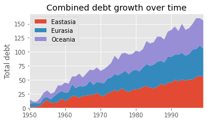
# 9. Plotting 2 grpahs in an axes
x = np.random.randint(low=1, high=11, size=50)
y = x + np.random.randint(1, 5, size=x.size)
data = np.column_stack((x, y))
fig, (ax1, ax2) = plt.subplots(nrows=1, ncols=2,figsize=(8, 4))
ax1.scatter(x=x, y=y, marker='o', c='r', edgecolor='b')
ax1.set_title('Scatter: $x$ versus $y$')
ax1.set_xlabel('$x$')
ax1.set_ylabel('$y$')
ax2.hist(data, bins=np.arange(data.min(), data.max()),label=('x', 'y'))
ax2.legend(loc=(0.65, 0.8))
ax2.set_title('Frequencies of $x$ and $y$')
ax2.yaxis.tick_right()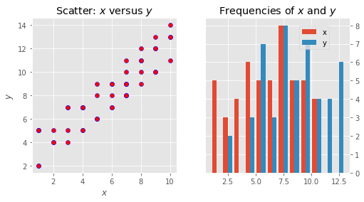
# 10. 3-D Counter plots
from mpl_toolkits import mplot3d
import numpy as np
import matplotlib.pyplot as plt
def f(x, y):
return np.sin(np.sqrt(x ** 2 + y ** 2))
x = np.linspace(-6, 6, 30)
y = np.linspace(-6, 6, 30)
X, Y = np.meshgrid(x, y)
Z = f(X, Y)
fig = plt.figure()
ax = plt.axes(projection='3d')
ax.contour3D(X, Y, Z, 50, cmap='binary')
ax.set_xlabel('x')
ax.set_ylabel('y')
ax.set_zlabel('z')
ax.set_title('3D contour')
plt.show()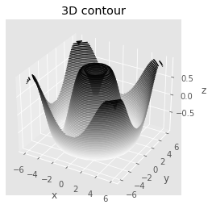
# 11. Funcformatter in Matplotlib
from matplotlib.ticker import FuncFormatter
def rad_to_degrees(x, pos):
return round(x * 57.2985, 2)
plt.figure(figsize=(12,7), dpi=100)
X = np.linspace(0,2*np.pi,1000)
plt.plot(X,np.sin(X))
plt.plot(X,np.cos(X))
# 1. Adjust x axis Ticks
plt.xticks(ticks=np.arange(0, 440/57.2985, 90/57.2985), fontsize=12, rotation=30) # 1 radian = 57.2985 degrees
# 2. Tick Parameters
plt.tick_params(axis='both',bottom=True, top=True, left=True, right=True, direction='in', which='major', grid_color='blue')
# 3. Format tick labels to convert radians to degrees
formatter = FuncFormatter(rad_to_degrees)
plt.gca().xaxis.set_major_formatter(formatter)
plt.grid(linestyle='--', linewidth=0.5, alpha=0.15)
plt.title('Sine and Cosine Waves\n(Notice the ticks are on all 4 sides pointing inwards, radians converted to degrees in x axis)', fontsize=14)
plt.show() 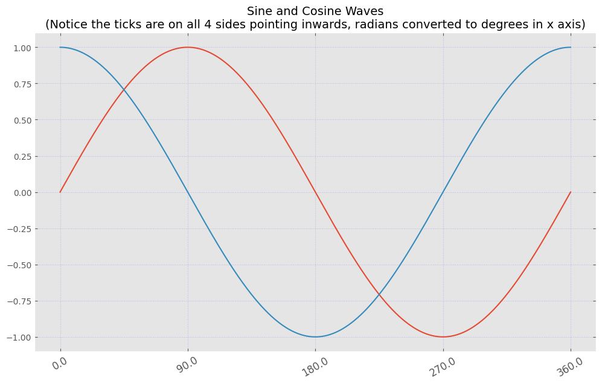
# 12 . Dotted lines plot
plt.plot([1, 2, 3, 4,5,6],[2,4,1,5,2,6],'--',marker='o',color='green',markerfacecolor='blue',markeredgecolor='blue')
plt.xlabel("x-axis")
plt.ylabel("y-axis")
plt.show()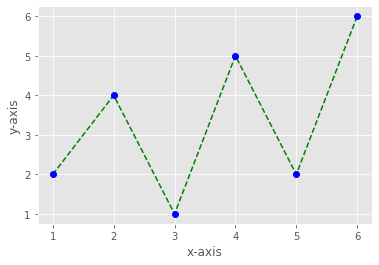
# 13.
from random import randint
import numpy as np
x_cords = range(-20,20)
y_cords = [x for x in x_cords]
plt.plot(x_cords, y_cords,color="red")
plt.show()
x_cords = range(-10,10)
y_cords = [x*x for x in x_cords]
plt.plot(x_cords, y_cords,color="blue")
plt.show()
x_cords = range(-20,20)
y_cords = [x*x*x for x in x_cords]
plt.plot(x_cords, y_cords,color="green")
plt.show()
x_cords = range(-20,20)
y_cords = [x*x*x*x for x in x_cords]
plt.plot(x_cords, y_cords,color="black")
plt.show()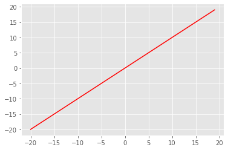
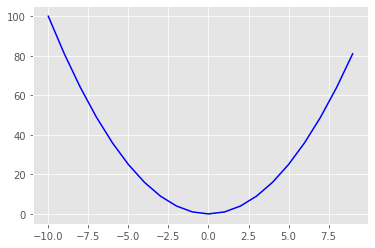
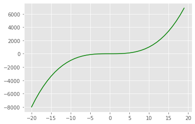
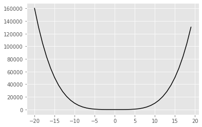
#14. Sin wave using grid
import matplotlib.pyplot as plt
import numpy as np
t = np.arange(0.0, 2.0, 0.01)
s = 1 + np.sin(2*np.pi*t)
plt.plot(t, s)
plt.xlabel('time (s)')
plt.ylabel('voltage (mV)')
plt.title('About as simple as it gets, folks')
plt.grid(True)
plt.savefig("test.png")
plt.show()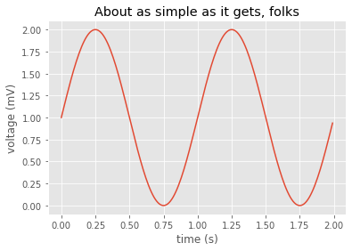
# 15.Draw a scatter plot for three different groups camparing weights and heights in data.csv
import matplotlib.pyplot as plt
import pandas as pd
data = pd.read_csv('/home/aishwarya/Documents/tact/mlvil/aishwarya/data.csv')
year = data['year']
sea_levels = data['CSIRO_sea_level']
plt.scatter(year, sea_levels, edgecolors='yellow')
plt.xlabel('Year')
plt.ylabel('Sea Level (inches)')
plt.title('Rise in Sealevel')
plt.show()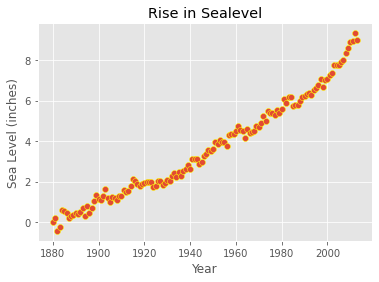
# 16. 3-D plot
ax = plt.axes(projection='3d')
# Data for a three-dimensional line
zline = np.linspace(0, 15, 1000)
xline = np.sin(zline)
yline = np.cos(zline)
ax.plot3D(xline, yline, zline, 'gray')
# Data for three-dimensional scattered points
zdata = 15 * np.random.random(100)
xdata = np.sin(zdata) + 0.1 * np.random.randn(100)
ydata = np.cos(zdata) + 0.1 * np.random.randn(100)
ax.scatter3D(xdata, ydata, zdata, c=zdata, cmap='Greens');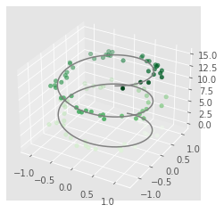
# 17. scatter plot using random distributions to generate balls of different sizes
import math
import random
import matplotlib.pyplot as plt
# create random data
no_of_balls = 25
x = [random.triangular() for i in range(no_of_balls)]
y = [random.gauss(0.5, 0.25) for i in range(no_of_balls)]
colors = [random.randint(1, 4) for i in range(no_of_balls)]
areas = [math.pi * random.randint(5, 15)**2 for i in range(no_of_balls)]
# draw the plot
plt.figure()
plt.scatter(x, y, s=areas, c=colors, alpha=0.85)
plt.axis([0.0, 1.0, 0.0, 1.0])
plt.xlabel("X")
plt.ylabel("Y")
plt.show()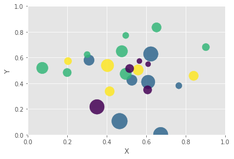
# 18. triangulate in the underlying parametrization
from matplotlib.tri import Triangulation
theta = np.linspace(0, 2 * np.pi, 30)
w = np.linspace(-0.25, 0.25, 8)
w, theta = np.meshgrid(w, theta)
# radius in x-y plane
phi = 0.5 * theta
r = 1 + w * np.cos(phi)
x = np.ravel(r * np.cos(theta))
y = np.ravel(r * np.sin(theta))
z = np.ravel(w * np.sin(phi))
tri = Triangulation(np.ravel(w), np.ravel(theta))
ax = plt.axes(projection='3d')
ax.plot_trisurf(x, y, z, triangles=tri.triangles,
cmap='viridis', linewidths=0.2);
ax.set_xlim(-1, 1); ax.set_ylim(-1, 1); ax.set_zlim(-1, 1);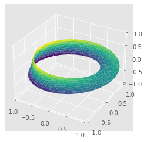
# 19. horizontal bar chart of the popularity of programming Languages
import matplotlib.pyplot as plt
x = ['Java', 'Python', 'PHP', 'JS', 'C#', 'C++']
popularity = [22.2, 17.6, 8.8, 8, 7.7, 6.7]
x_pos = [i for i, _ in enumerate(x)]
plt.barh(x_pos, popularity, color='green')
plt.xlabel("Popularity")
plt.ylabel("Languages")
plt.title("PopularitY of Programming Language\n" + "Worldwide, Oct 2017 compared to a year ago")
plt.yticks(x_pos, x)
# Turn on the grid
plt.minorticks_on()
plt.grid(which='major', linestyle='-', linewidth='0.5', color='red')
# Customize the minor grid
plt.grid(which='minor', linestyle=':', linewidth='0.5', color='black')
plt.show()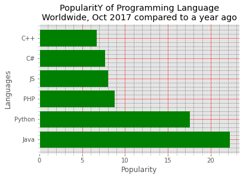
# 20. Quiver plot
import matplotlib.pyplot as plt
import numpy as np
x,y = np.meshgrid(np.arange(-2, 2, .2), np.arange(-2, 2, .25))
z = x*np.exp(-x**2 - y**2)
v, u = np.gradient(z, .2, .2)
fig, ax = plt.subplots()
q = ax.quiver(x,y,u,v)
plt.show()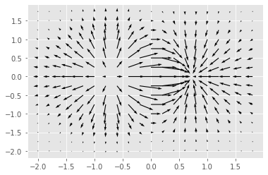
# 21. Voilen plot
import matplotlib.pyplot as plt
np.random.seed(10)
collectn_1 = np.random.normal(100, 10, 200)
collectn_2 = np.random.normal(80, 30, 200)
collectn_3 = np.random.normal(90, 20, 200)
collectn_4 = np.random.normal(70, 25, 200)
## combine these different collections into a list
data_to_plot = [collectn_1, collectn_2, collectn_3, collectn_4]
# Create a figure instance
fig = plt.figure()
# Create an axes instance
ax = fig.add_axes([0,0,1,1])
# Create the boxplot
bp = ax.violinplot(data_to_plot)
plt.show()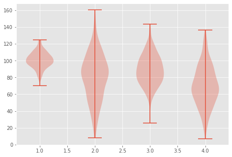
# 22. #-D contrast plot
from mpl_toolkits import mplot3d
import numpy as np
import matplotlib.pyplot as plt
x = np.outer(np.linspace(-2, 2, 30), np.ones(30))
y = x.copy().T # transpose
z = np.cos(x ** 2 + y ** 2)
fig = plt.figure()
ax = plt.axes(projection='3d')
ax.plot_surface(x, y, z,cmap='viridis', edgecolor='none')
ax.set_title('Surface plot')
plt.show()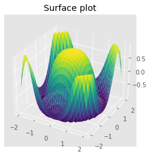
# 23. Contour plot
import numpy as np
import matplotlib.pyplot as plt
xlist = np.linspace(-3.0, 3.0, 100)
ylist = np.linspace(-3.0, 3.0, 100)
X, Y = np.meshgrid(xlist, ylist)
Z = np.sqrt(X**2 + Y**2)
fig,ax=plt.subplots(1,1)
cp = ax.contourf(X, Y, Z)
fig.colorbar(cp) # Add a colorbar to a plot
ax.set_title('Filled Contours Plot')
#ax.set_xlabel('x (cm)')
ax.set_ylabel('y (cm)')
plt.show()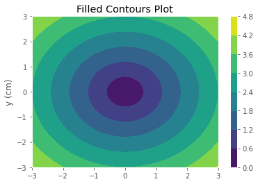
# 24. stacked bar plot with error bars
import numpy as np
import matplotlib.pyplot as plt
N = 5
menMeans = (22, 30, 35, 35, 26)
womenMeans = (25, 32, 30, 35, 29)
menStd = (4, 3, 4, 1, 5)
womenStd = (3, 5, 2, 3, 3)
# the x locations for the groups
ind = np.arange(N)
# the width of the bars
width = 0.35
p1 = plt.bar(ind, menMeans, width, yerr=menStd, color='red')
p2 = plt.bar(ind, womenMeans, width,
bottom=menMeans, yerr=womenStd, color='green')
plt.ylabel('Scores')
plt.xlabel('Groups')
plt.title('Scores by group\n' + 'and gender')
plt.xticks(ind, ('Group1', 'Group2', 'Group3', 'Group4', 'Group5'))
plt.yticks(np.arange(0, 81, 10))
plt.legend((p1[0], p2[0]), ('Men', 'Women'))
plt.show()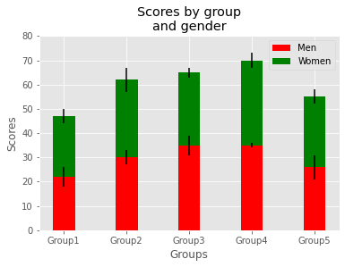
# 25.3-D Wireframe
from mpl_toolkits import mplot3d
import numpy as np
import matplotlib.pyplot as plt
def f(x, y):
return np.sin(np.sqrt(x ** 2 + y ** 2))
x = np.linspace(-6, 6, 30)
y = np.linspace(-6, 6, 30)
X, Y = np.meshgrid(x, y)
Z = f(X, Y)
fig = plt.figure()
ax = plt.axes(projection='3d')
ax.plot_wireframe(X, Y, Z, color='black')
ax.set_title('wireframe')
plt.show()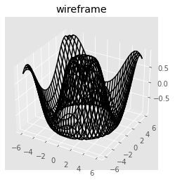
# 26.Image plot
import matplotlib.pyplot as plt
import matplotlib.image as mpimg
import numpy as np
img = mpimg.imread('index.jpeg')
plt.imshow(img)<matplotlib.image.AxesImage at 0x7f6f4b22b460>
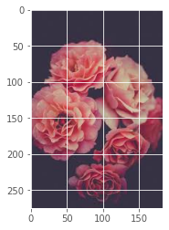